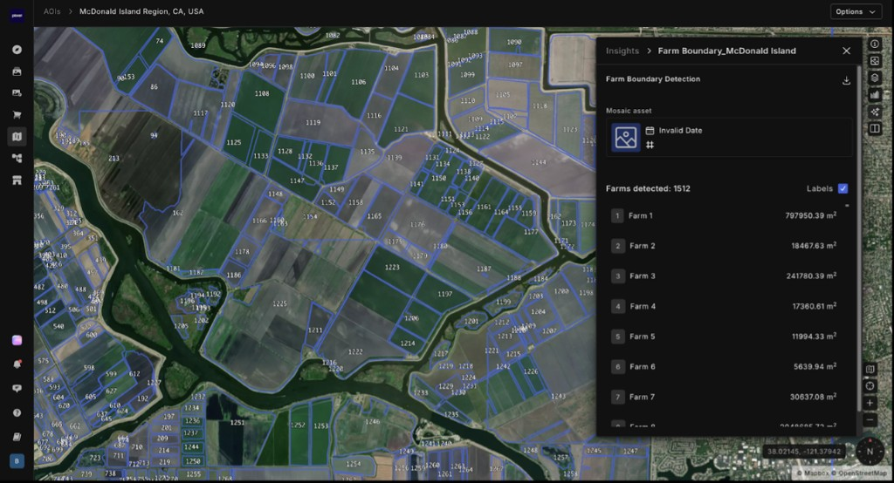
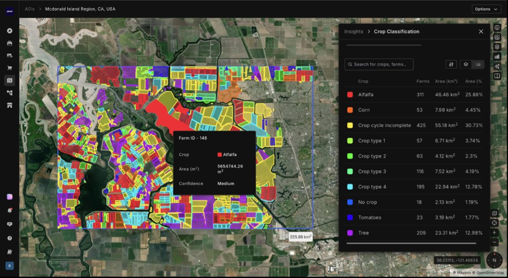
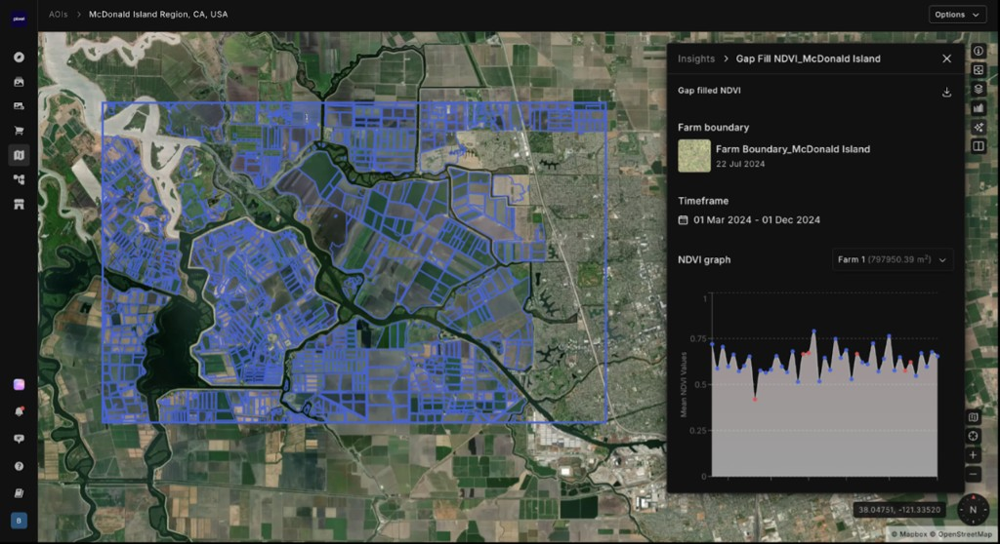
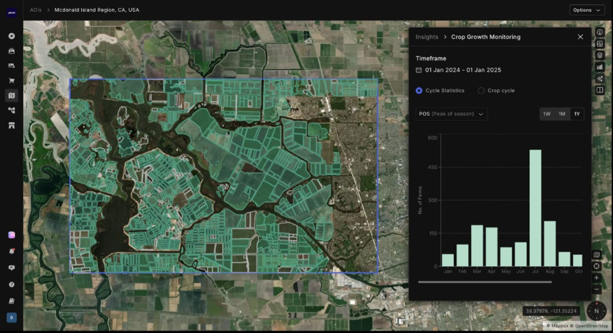
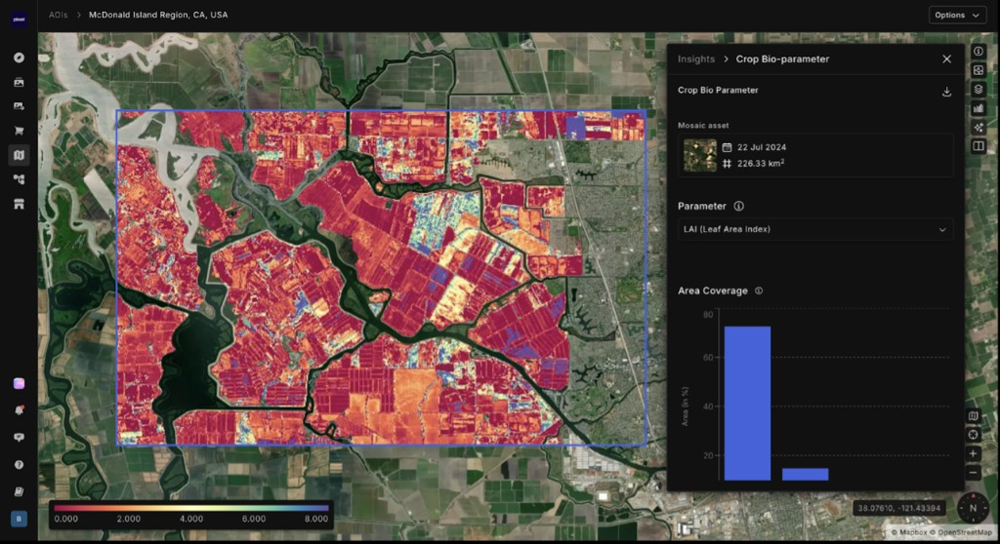
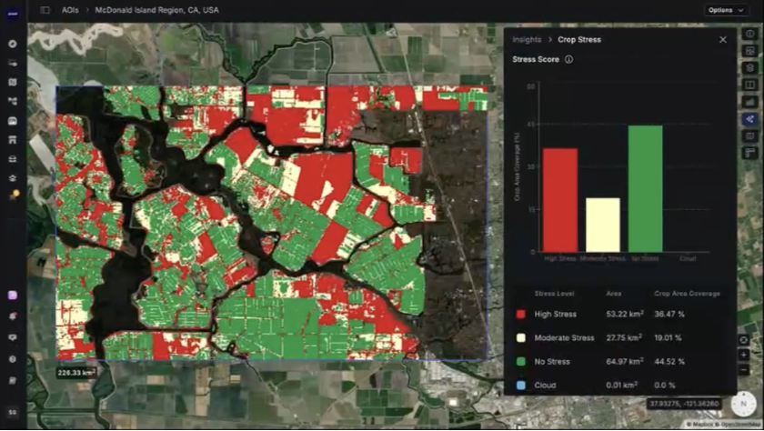

A crop stress intelligence case study from Datia District, Madhya Pradesh. Kharif 2025. Grain filling stage. 69,200 hectares of farmland monitored across four taluks 33,000 of them basmati rice, five concurrent stress types, and a ten-day window before yield potential is locked in permanently.
Most crop monitoring systems treat fields as grids of pixels. Each new satellite pass produces a new map. Analysts compare maps over time and infer what changed. This approach is fundamentally limited: it has no memory, no field identity, and no understanding of what a field is supposed to look like.
Pixxel operates on a different principle. A field is a persistent object with an identity, history, and trajectory. The job of an intelligence system is not to produce maps. It is to know an individual field's biophysical state, their stress history, their response patterns deeply enough so that anomalies become detectable and interpretable as specific problems, not generic changes in pixel color.
This requires three integrated systems creating our NEXUS product, each solving a specific part of the problem: acquisition and retrieval of biophysical state, integration of environmental forcing context, and semantic search across the field's complete history.
ILLUSTRATIVE PLATFORM VIEW · McDonald Island Region, CA · Same layer delivered for Datia District AOIs

The case study that follows illustrates what this stack produces when applied to real-world precision agriculture: 69,200 hectares of farmland monitored, 33,000 hectares of it basmati rice at grain filling stage, five concurrent stress types, and a ten-day intervention window.
Basmati rice at grain filling is one of the most time-sensitive situations in precision agriculture. The grain filling stage when the plant transfers photosynthate from leaves and stems into the developing grain lasts roughly three to four weeks. Stress during this window does not delay the harvest. It reduces it permanently. Yield that is lost at grain filling cannot be recovered.
In October 2025, the Bhander region of Datia District, Madhya Pradesh spans 69,200 hectares of monitored farmland across four taluks 52,600 hectares classified as rice and 33,000 hectares of it confirmed basmati at this stage. Post-monsoon soil moisture is uneven. Nitrogen levels are declining. Blast disease pressure is building in Bhander. Bacterial Leaf Blight is confirmed in Seondha. In Indergarh, SAR anomalies are flagging early lodging risk in the lowest-lying fields. Five stress types. Four taluks. A regional yield risk of 12–18% below potential if nothing changes in the next ten days.
Why grain filling? At heading through grain filling, basmati rice transfers stored carbohydrates into the developing grain while simultaneously building the aromatic compounds that define basmati quality. Water stress reduces grain weight. Nitrogen depletion reduces protein content. Disease pressure disrupts the photosynthetic machinery driving both. A single week of unaddressed compound stress at this stage can cost 15–20% of yield and significantly degrade the aromatic quality that commands the basmati price premium.
Before a single stress signal is interpreted, the intelligence model first establishes what is actually growing where. Hyperspectral classification separates basmati from non-basmati rice and from other crops across the full 69,200-hectare footprint, with per-taluk confidence scores and uncertainty bounds that scale with crop development stage.
ILLUSTRATIVE PLATFORM VIEW · McDonald Island Region, CA · Same layer delivered for Datia District AOIs

The ten-day reporting window does not exist in isolation. It is the culmination of a full kharif season of observation. The NEXUS cube has been accumulating data since transplanting in June every cloud-free Sentinel-2 pass, every Firefly hyperspectral acquisition, every MicroClim climate update. The intelligence model knows what each field looked like at every prior stage, which makes current anomalies interpretable as anomalies rather than just numbers.
ILLUSTRATIVE PLATFORM VIEW · McDonald Island Region, CA · Same layer delivered for Datia District AOIs

ILLUSTRATIVE PLATFORM VIEW · McDonald Island Region, CA · Same layer delivered for Datia District AOIs

Basmati rice at grain filling has a spectral signature that encodes multiple stress signals simultaneously. Standard satellite indices see the canopy as a whole and flag when it is generally declining. They cannot distinguish the nitrogen depletion signal from the water stress signal from the disease-driven chlorophyll disruption. Pixxel's Firefly sensor resolves these signals individually 400 contiguous spectral bands across the visible and near-infrared, each one a narrow window into a specific physical or biochemical process.
Spectral signals reveal what the canopy is doing. Attribution, the difference between an observation and an actionable diagnosis, requires context that optical sensors cannot provide alone. SAR penetrates cloud and reads canopy structure and soil moisture. MicroClim supplies the climate forcing that conditions every biological process. The field's own NEXUS history provides the expected-state baseline that makes an anomaly interpretable as an anomaly rather than just a number.
The intelligence model retrieves the actual biophysical state of the rice canopy using advanced radiative transfer modeling (PROSAIL, ISOFIT) combined with weather modeling. These are the physical variables that directly govern yield and quality: what the plant is doing biologically at the cellular and leaf level, not what colour it appears from space.
ILLUSTRATIVE PLATFORM VIEW · McDonald Island Region, CA · Same layer delivered for Datia District AOIs

The intelligence model decomposes the combined spectral and multimodal anomaly into its constituent causes, each traceable to a specific set of signals. In a fully realized SSE-integrated deployment, the system also searches the district's NEXUS history for field states that preceded known stress events in prior seasons, surfacing early compound stress signatures before any individual threshold is crossed.
Knowing the stress type is necessary. Knowing which hectares are affected is what makes the prescription actionable. The intelligence model maps every stress class at pixel level and aggregates to taluk-level acreage the geographic resolution at which a cooperative, government department, or insurance assessor can act.
ILLUSTRATIVE PLATFORM VIEW · McDonald Island Region, CA · Same layer delivered for Datia District AOIs

A stress score that does not produce an action is just a number. The final output of the intelligence model is a prioritised management advisory taluk by taluk, stress type by stress type, ranked by urgency and projected yield impact, and compliant with export-market MRL requirements for basmati. In a fully realized SSE-integrated deployment, the prescription engine also surfaces analogous historical interventions from the NEXUS record: "the last time Bhander showed this blast signature at this humidity level, fungicide applied within 72 hours limited damage to 4% of the affected area."
The same biophysical retrieval that drives the stress diagnosis also drives a forward yield estimate. AGB, LAI, and light-use-efficiency trajectories projected through the remaining grain-fill window translate directly into expected output per hectare and per taluk. For a procurement buyer, this converts a stress map into a sourcing plan: where the volume is, when it will be ready to harvest, and how much confidence to attach to each estimate.
Estimated regional basmati output for Kharif 2025 is 1,28,157 MT at a district average of 3.88 t/ha. Indergarh records the highest per-hectare yield at 4.14 t/ha despite carrying the most severe water stress, while Bhander, the largest single-taluk pool at 42,560 MT, sits at 3.80 t/ha consistent with its mixed black-cotton-to-loamy soils. Seondha trails the region at 3.71 t/ha.
Yield volume alone does not determine sourcing order. Harvest readiness, intervention urgency, and model confidence combine into a procurement priority that sequences buyer action across the cycle from Indergarh's de-risked early window to Seondha's deferred late-October pool.
The Datia District case illustrates four distinct commercial applications of the same underlying intelligence each serving a different buyer, all derived from a single physical observation of the same 69,200 hectares of monitored farmland (33,000 of them basmati).
A rice cooperative serving Datia District receives a ten-day advisory covering all four taluks, ranked by urgency, with ICAR-compliant prescriptions that field officers can act on immediately. No agronomist site visit required for stress screening only for application confirmation.
A state agriculture department receives quantified acreage by stress class 5,164 Ha high, 10,822 Ha moderate enabling targeted subsidy deployment, input supply logistics, and yield forecast revision ahead of harvest procurement season.
A crop insurer receives a spatially explicit stress record tied to specific growth stage events blast outbreak, irrigation deficit, lodging incident with biophysical evidence tracing yield impact to its physical cause. Claims are adjudicated with data, not site visits alone.
A basmati exporter receives advance notice of elevated quality degradation risk in Seondha and Indergarh nitrogen depletion and water stress during grain filling directly affect aromatic compound development. Procurement decisions can be adjusted before harvest.
The intelligence report illustrated in this case study represents the target output of the Pixxel analytics stack. It is built from real scientific methods and real production capabilities and it is honest about which parts are operational today, which are in active development, and when the full integrated system is expected to be available.
Firefly is operational and producing hyperspectral data. ISOFIT atmospheric correction is running in production. PROSAIL inversion retrieving LAI, CCC, CWC, LCC, fAPAR, AGB, and LUE is validated and deployed. Spectral indices including NDRE, MCARI, CWSI, and SIF are operational. SAR anomaly detection is available where Sentinel-1 data is integrated. Individual stress layers water stress, nitrogen status, blast risk screening, BLB detection exist as separate production outputs. Pilot engagements in rice, wheat, and other kharif crops can be scoped now, delivering the individual analytical layers described in this case study as analyst-produced GeoTIFF outputs and structured reports.
The NEXUS cube architecture that unifies these individual layers into a single coherent per-AOI intelligence object. The MicroClim climate forcing integration that conditions every biological interpretation against the actual weather the crop experienced. The Semantic Search Engine that makes the district's full observational history queryable enabling the “show me every field that looked like this before a blast outbreak” class of question that no pre-specified alert rule can answer. The solution packages that structure these capabilities into commercially defined, repeatable precision agriculture products.
The fully integrated intelligence stack described in this paper NEXUS cube accumulation, SSE-powered semantic search across seasons of field-level data, MicroClim-conditioned biophysical baselines, multimodal attribution, and automated prescription generation delivered as a unified platform with API access, operator dashboards, and continuous monitoring subscriptions for enterprise customers. Early customers onboarding in 2025 and 2026 are part of this build. Their fields populate the first generation of hyper-local intelligence models. Their agronomists validate the prescriptions. Their yield outcomes calibrate the attribution layer season by season. The platform that exists in early 2027 will be meaningfully smarter for every season of field-level data it has accumulated before then.